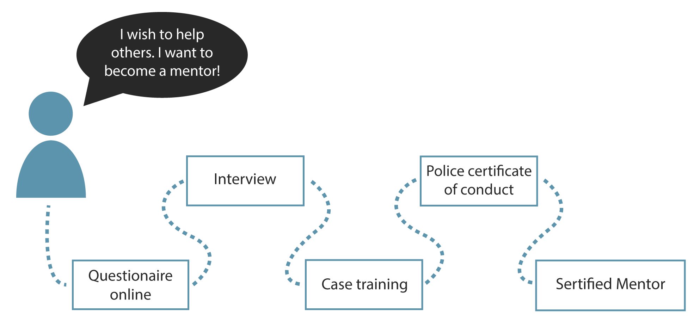
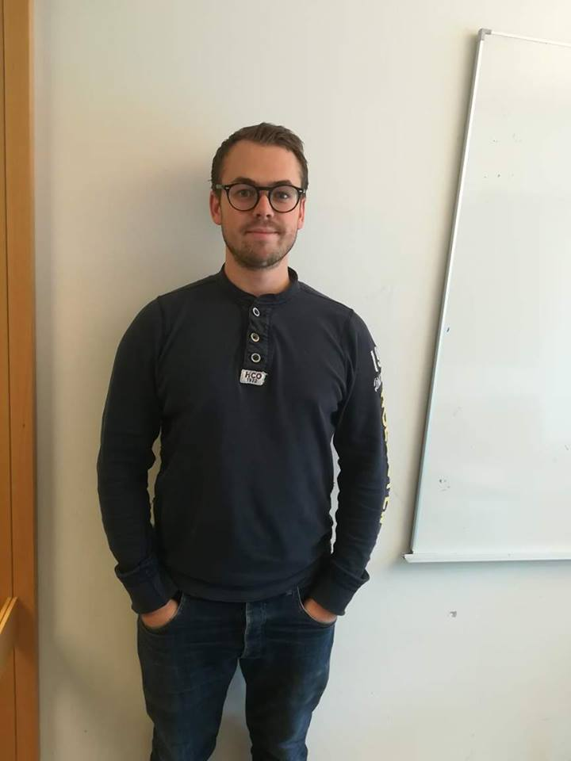
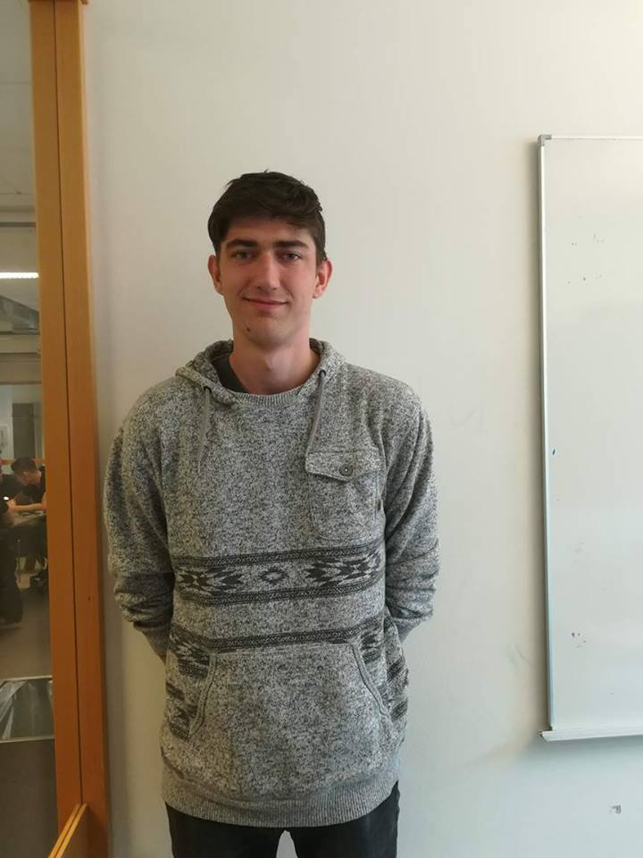
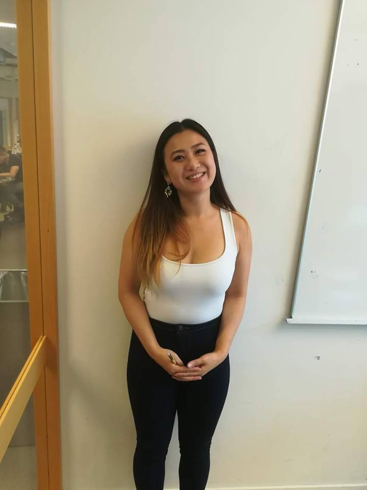

Certification of mentor
Students from all over Norway can sign up to become a mentor in our Organization, do become a mentor they need to answer a small survey so that we get review whether the person is suitable or not to be a mentor. Then, they will be called in to an interview where we ask about their motivation, why they would like to become a mentor and if they have any prior experience with something similar. Then the candidates are summoned to a private casetrening, a little review on how to behave, and how not to behave, and what to do if something bad happens. Finally, all must deliver a police certificate of conduct and get certification proof from us that they are an approved mentor. It is a big responsibility and a lot of trust that is required, therefore it is important that we are thorough.

It is ionly a few years ago since our sponsors were young and had to find out of all the difficult challenges children are facing, and that is exactly why they are best qualified to do the job. Our mentors are energy-rich, spontaneous and big-hearted people. They want to do new things and are exelent at adapting to situations, and adapting to people. They have the ability to give a push in the right direction, challenge, inspire, and help children in difficult periods.
Våre faddere
Kristoffer Farstad
He is studying computer-engineering at HiOA. He enjoys playing computer games, fotball and mountain-hikes. He is active in the Friminutt management and help planning bigger events for our members.

Anders Gorboe
He is studying computer-engineering at HioA. He loves every type of ballsport, fotball, floorball, basketball you name it! He is responsible for larger scale tournaments in the weekends where everyone can participate and win prices.

Si-Jane Woo
She is studying computer-engineering at HioA. She is a former profecional dancer, and she loves learning others what she knows. She has a passion for food and can speak four languages fluently.
